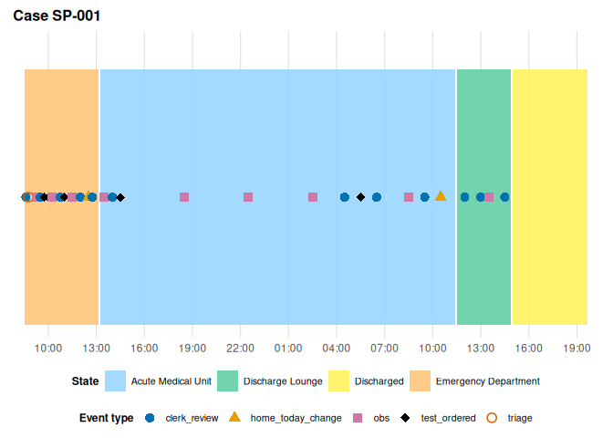
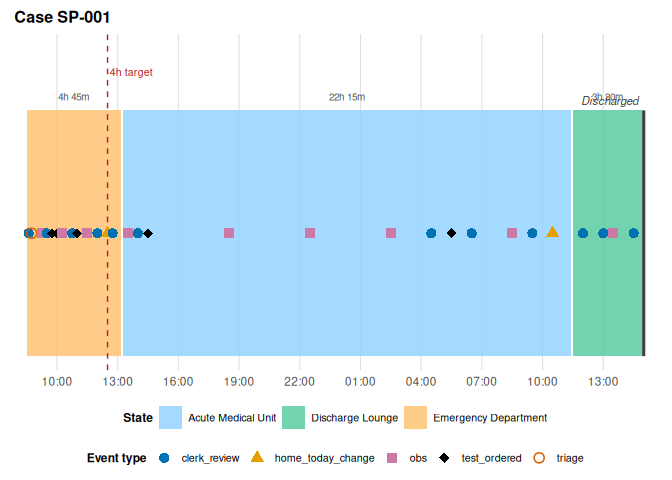
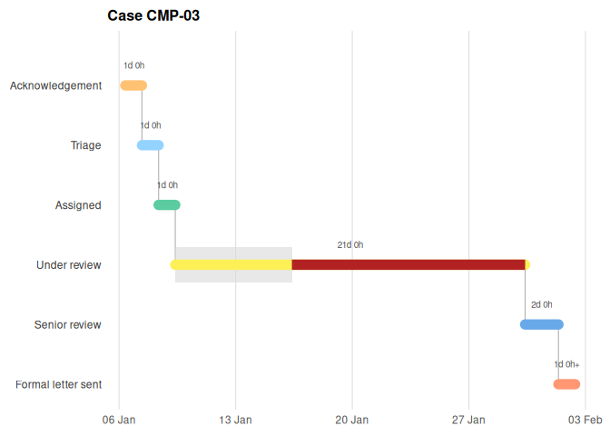
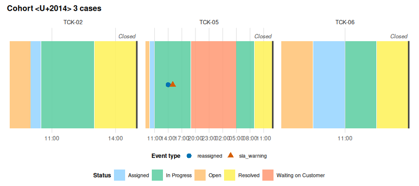

eventviz visualises any timestamped event log. If your data has a case, a timestamp, and a state that case occupies exclusively over time (a complaint stage, a support-ticket status, a pipeline step, a warehouse location), eventviz turns it into a timeline, a staircase diagram, a faceted cohort comparison, or an aggregate statistical summary, with a colourblind-safe default palette and an interactive tooltip renderer available on request.
Installation
eventviz isn’t on CRAN. Install the development version from GitHub:
# install.packages("pak")
pak::pak("JasperCain01/event-driven-visualisation")Quick start
Every plot needs exactly one explicit declaration: state_events, the act_type value(s) that open a state. The package ships example_journey, a single-case event log, so this is one call:
library(eventviz)
plot_case_timeline(example_journey,
state_events = c("location_move", "ed_location_move"))
Turn on a few opt-in features — duration labels, a target-threshold line, and terminal-state handling so “Discharged” renders as a marker rather than an invented multi-hour stay:
plot_case_timeline(
example_journey,
state_events = c("location_move", "ed_location_move"),
show_duration = TRUE,
terminal_activities = "Discharged",
reference_lines = data.frame(offset_hours = 4, label = "4h target")
)
If you omit state_events, or point case_id at a case that doesn’t exist, the error tells you what’s actually in your data rather than guessing at it.
Same API, any domain
complaint_example and support_ticket_example run through the exact same functions — no domain-specific arguments, just different column mappings and state_events values.
For a strictly linear process, plot_stage_ladder() answers “where does the time go” by putting the state on the y-axis instead of x, so the case walks down-and-right like a Gantt chart:
plot_stage_ladder(
complaint_example, case_id = "CMP-03",
state_events = "stage_change", case_col = "complaint_id",
stage_targets = c("Under review" = 24 * 7) # a one-week target
)
plot_cohort_timeline() compares several cases at once as small multiples, and state_label relabels the fill legend for a non-spatial process:
plot_cohort_timeline(
support_ticket_example,
state_events = "status_change", case_col = "ticket_id",
terminal_activities = "Closed", state_label = "Status",
case_ids = c("TCK-02", "TCK-05", "TCK-06")
)
Bring your own data
If your column names don’t match the defaults, either pass them explicitly (time_col, case_col, act_type_col, activity_col) or let schema = "auto" detect them for you. If your data is wide (one row per case, one column per milestone timestamp), pivot_events_longer() reshapes it into the long form every plotting function expects — its output feeds state_events = "state_change" directly, no translation needed. See vignette("adapting-your-data").
Learn more
-
vignette("getting-started")— the full walkthrough on the bundledexample_journeydataset -
vignette("adapting-your-data")— schema autodetection and the wide-to-long pivot wrapper, for bringing your own data -
vignette("linear-processes")— band vs. staircase for complaints and tickets, and per-state targets -
vignette("cohort-analysis")— facets plus aggregate/breach/transition summaries across a cohort